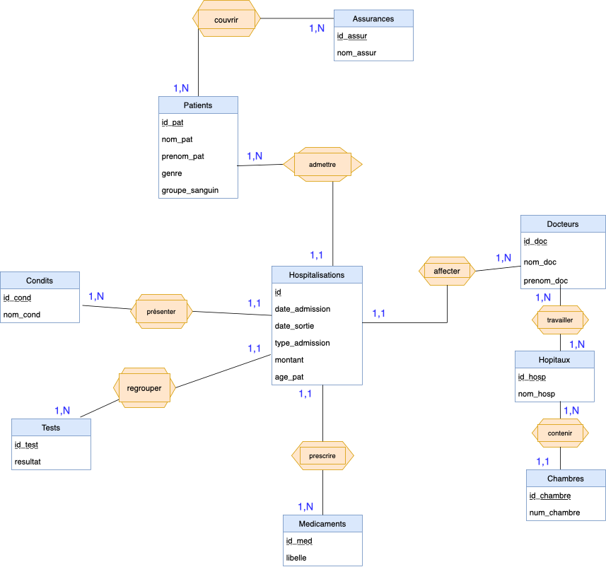
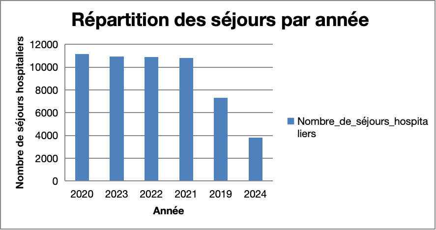

Analyse médicale : conception d'une base de données
Des données médicales (fictives) ont été nettoyées et préparées avec Pandas et Numpy de Python.
Pour ce faire, nous avons suivi les étapes suivantes :
- vérification des types de données
- gestion des données manquantes
-
correction des incohérences et des erreurs typographiques
- uniformisation des noms des patients et médecins
- correction des incohérences dans la colonne d’état de santé
- correction des anomalies dans les noms d’hôpitaux
- détection et Suppression des doublons
- vérification de l’existence de valeurs aberrantes
- ajouter de nouvelles colonnes au DataFrame
Ensuite, mes camarades et moi avons conçu une base de données basée sur les données disponibles en
tenant compte des relations et occurences observées sur le jeu de données.
Voici une image du modèle conceptuel obtenu.

Nous avons continué la modélisation avec les modèles logique et physique. Les tables obtenues
ont été implémentées sous MySQL Workbench.
La base de donnée étant prête à l'emploi, nous avons réalisé une analyse exploratoire.
Un rapport Excel a été généré dynamiquement pour stocker les résultats.

L’ensemble du projet, de la préparation à l’analyse, est détaillé dans le rapport complet.
Pour plus de détails, consultez le rapport complet ici.
Scripts disponibles ici.
Medical Analysis: Database Design
Fictional medical data were cleaned and prepared using Python’s Pandas and NumPy libraries.
The process followed these steps:
- Data type verification
- Handling missing data
-
Correction of inconsistencies and typographical errors
- Standardizing patient and physician names
- Correcting inconsistencies in the health status column
- Correcting anomalies in hospital names
- Detection and removal of duplicates
- Checking for outliers
- Adding new columns to the DataFrame
Next, my classmates and I designed a database based on the available data,
taking into account the relationships and occurrences observed in the dataset.
Here is an image of the conceptual model.
We continued the modeling by creating logical and physical models.
The resulting tables were implemented in MySQL Workbench.
Once the database was ready for use, we performed exploratory analysis.
A dynamic Excel report was generated to store the results.
The entire project, from data preparation to analysis, is explained in detail in the full report.
For more information, see the complete report here.
Scripts available here.